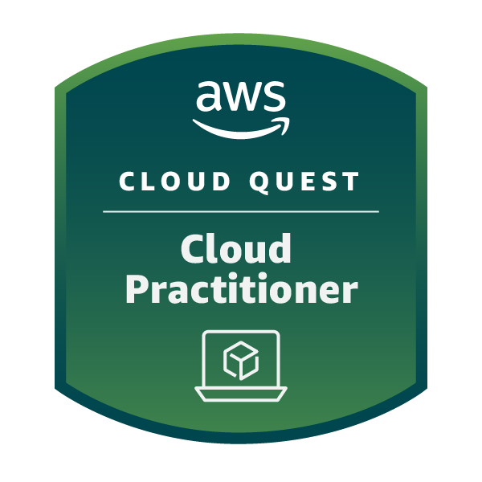
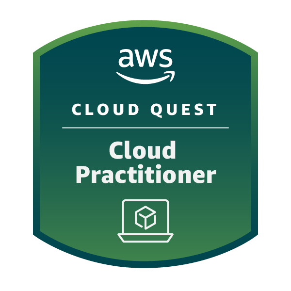

AWS Cloud Practitioner & NLP Specialist
Profile
As a dedicated and esteemed expert in Telephony and Natural Language Processing, certified as an AWS Cloud Practitioner, I bring extensive knowledge and experience from large-scale contact centres. My strong communication and organisational skills complement my proven ability to develop and implement innovative solutions tailored to diverse needs. I specialise in optimising contact centre efficiencies, reducing operating costs, and enhancing system performance. Additionally, I excel in introducing and integrating new technologies within business environments, ensuring compliance with group standards. My expertise in fostering technology adoption and acceptance through Agile practices, particularly the SAFe methodology, further underscores my capability to drive successful outcomes.
Certifications
- AWS Cloud Practitioner Foundation
- AWS Cloud Quest – Cloud Practitioner
- Learn Python 3 (Codecademy)
- Elements of AI (University of Helsinki)
- AWS Certified Solutions Architect – Associate
- GitHub Foundations, Terraform Associate
Projects
Diabetes Tracker Web App
Summary: A personal health management web application designed to help individuals monitor and manage their diabetes. Built using Python and Streamlit, the app enables users to track blood glucose readings, HbA1c lab results, and diabetic supply inventory in a simple, secure, and intuitive interface.
- Manual and CSV import of blood glucose readings
- HbA1c trend logging and visualization
- Inventory tracking for diabetic supplies (e.g. insulin, test strips)
- Visual graphs with rolling averages and combined trends
- CSV file downloads and template support
- Custom data reset, data separation, and first-time setup guidance
- Version-controlled and hosted via GitHub with a public Streamlit deployment
Tech Stack: Streamlit (frontend), Python (Pandas, Matplotlib), CSV (data), GitHub + Streamlit Cloud (deployment)
- Clean, modular architecture with utils.py for logic separation
- Release notes, changelogs, project board, GitHub wiki, and contribution guide
- Fully documented README and structured folder system
- Actively maintained with versioning and milestone tracking
Technical Skills
Amazon Web Services, Amazon Connect, Lex, AWS CloudWatch, Terraform, Python, ServiceNow, Cisco Tools, SQL, GitHub, PowerBI, Qstory
Project & Delivery Skills
Agile, SAFe, Jira, Zephyr Scale, Miro, Confluence, Telephony Consultancy, Testing, Documentation, Stakeholder Management
Experience
Senior Consultant – NLP Specialist
Nationwide Building Society | 2017 – Present
- Designed and deployed NLP systems using Amazon Lex and AWS CloudWatch.
- Led improvements in contact centre efficiency through cloud telephony upgrades.
- Built and maintained ServiceNow task catalogues for workflow automation.
- Championed Jira and Zephyr Scale adoption to improve agile delivery and testing.
Senior Telephony Consultant
Nationwide Building Society | 2011 – 2017
- Developed a large multisite virtual contact centre infrastructure.
- Provided expert consultancy and documentation for telephony processes.
IVR Analyst
Nationwide Building Society | 2009 – 2011
- Implemented BAU telephony updates and conducted full CX testing.
Direct Support Analyst
Nationwide Building Society | 2008 – 2009
- Managed facilities and recruitment support for internal operations.
Education
- BA (Hons) Communication Studies
- A-Levels – ICT, Media Studies, Communication Studies
- 10 GCSEs A–C including Maths, English, and Science
Interests
Reading, Role Playing Games, Coding, Cooking